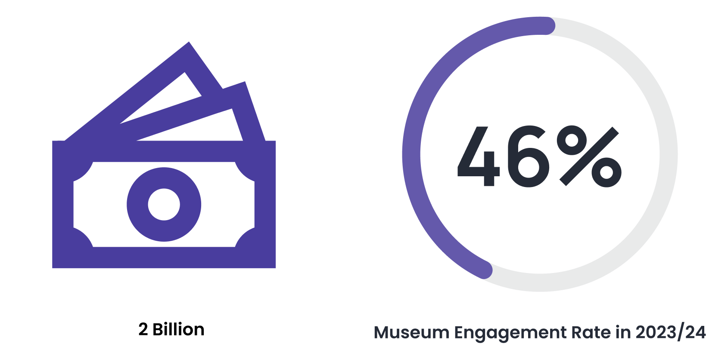
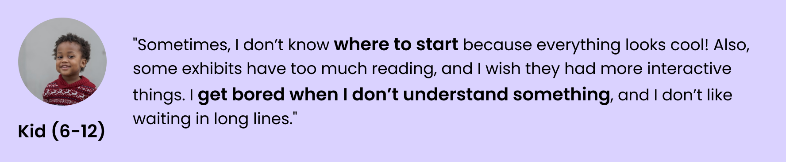
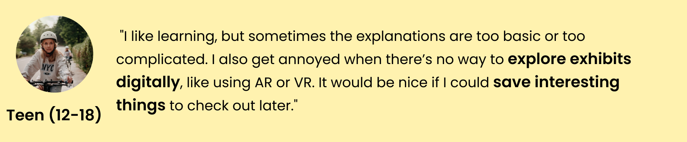
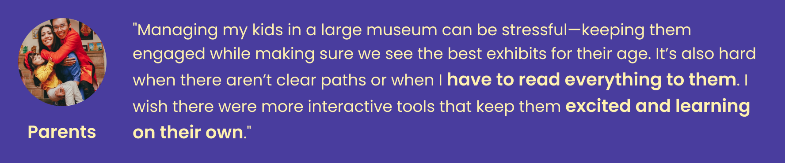

MuseoGo
Role
Product Designer
Front-end Developer
Responsibility
User research
Ideation
Wireframe
Prototype
Front-end development
Time Duration
Jan 2025 - Feb 2025
Problem
As both a product designer and an educator, my previous teaching experience in museums inspired many of the ideas behind this product. I noticed that parents and children often walked through exhibitions, absorbing very little knowledge before losing interest. Kids didn't seem to enjoy museums and only visited when prompted by teachers or parents, creating a negative feedback loop. This phenomenon puzzled me, so my friend Ruby and I decided to explore it further and find potential solutions.
As we delved deeper into our research, we discovered that the issues were not only widespread but also more serious than we initially thought. Statistics reveal that museums in the U.S. invest $2 billion annually in educational activities. Yet, the average museum engagement rate for 2023/24 stands at just 46%. Despite the wealth of exceptional educational resources available in museums, these resources are often wasted or overlooked every day.This is the problem we set out to solve:
”How might we transform museum visits into engaging, meaningful, and enjoyable learning experiences for children to reduce the waste of educational resource?”
Research
To begin, we conducted interviews with museum visitors to identify their pain points when it comes to learning in these spaces. Our primary focus was on three key groups: children (ages 8–12), teenagers (ages 13–17), and parents. Based on their feedback, I developed personas to better understand their unique needs, behaviors, and challenges.
  In summary, we categorized their needs into three distinct phases of the museum visit: before, during, and after. This framework allowed us to address their pain points and opportunities for engagement at each stage.
We also explored existing products in the museum education space, carefully analyzing their features, strengths, and shortcomings. This research helped us pinpoint gaps and uncover our opportunities.

Our opportunities:
Solutions
Before Visit
Thanks to advancements in AI technology, we can now create personalized itineraries tailored to each family’s unique needs. To enable this, we ask users to input basic visit information, such as their children’s ages, topics of interest, estimated arrival time, and planned duration of their stay. Using this data, the AI generates a customized visit plan, along with a curated podcast and recommended books to help families preview the experience.
This step occurs when parents are booking tickets at home, so we designed it primarily for the website view, with text tailored to engage and guide parents. However, once families are at the museum, parents typically rely on their mobile phones. To help them seamlessly use the generated plan during their visit—and to encourage adoption of our product—we’ve provided multiple access options to suit different user preferences. Whether they prefer email, direct links, or app integration, we’ve made it easy for parents to access and follow their personalized itinerary on the go.
Enter visit info
Visit plan in time line
Multiple ways to view plan on mobile phones
Podcast and book recommendation
During Visit
For the visit itself, our goal is to encourage kids to interact more deeply with the exhibitions. Drawing inspiration from the self-determination theory, we designed experiences to fulfill three core psychological needs for learners: autonomy, relatedness, and competence.
AI companion
Collaborative activities
Quizzes
I designed a cute, friendly AI character - Museo - to make it engaging and relatable for kids, encouraging interaction. With voice input, children can easily ask questions, creating a seamless and enjoyable museum experience.
Museo
Voice input
For the quiz, we wanted to ensure kids never feel like they’ve 'failed' the museum, avoiding any negative experiences. If a child selects a wrong answer, a pop-up window appears with guidance or clues, encouraging them to find the correct answer in the exhibition. Once they complete the quiz, they earn bonus points—a rewarding system designed to boost engagement and make learning fun.
Quiz
Scaffold
Bonus points
After Visit
After completing each exhibition, visitors earn a unique badge as part of the reward system. At the end of their trip, these badges are displayed as a collection on the exit ticket. The exit ticket serves as a summary, helping visitors review what they’ve learned and reinforcing their knowledge in a fun and memorable way.
Badge
Exit ticket
Drawing from the multimedia learning theory, we use AI to generate a unique song for each group, summarizing what they’ve learned for long-term retention. Designed as a gift from Museo, this feature adds a conversational and memorable touch to the learning experience.
Choose topics
Generated song
Song
Beyond the visit, we recommend additional learning resources—like videos, books, and related exhibitions—based on what they explored that day. This helps families make the most of the museum’s offerings and extends the learning experience beyond their visit
Videos
Books
Exhibitions
Prototype
Before Visit
During Visit
After Visit
Marketing
I designed and developed the official website for MuseoGo, creating a dynamic platform to introduce the product, highlight its features, and attract more users. The website is now live and actively serving its purpose.
Introduction
Features
Team
Join Waitlist
Conclusion
MuseoGo is a testament to the power of user-centered design in creating meaningful and engaging experiences. By addressing the pain points of museum visitors—parents, kids, and teens—we’ve crafted a solution that seamlessly integrates into their journey, from planning at home to exploring in the museum and reflecting afterward. This project highlights how thoughtful UX design, combined with innovative technology, can transform a traditionally passive experience into an interactive, educational, and enjoyable adventure.
Key Takeaways
Explore More

Penn Place
Penn's first-ever collaborative 3D construction platform attracting 30000+ interactions.

World Salon
The website and mobile app for the social networking platform designed from 0 to 1.
Designed and Coded by Yue, 2025